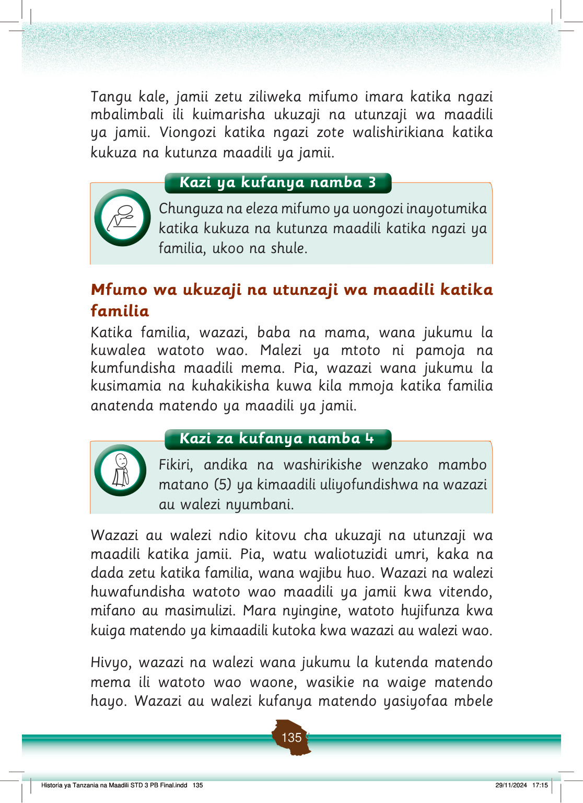

Tangu kale, jamii zetu ziliweka mifumo imara katika ngazi mbalimbali ili kuimarisha ukuzaji na utunzaji wa maadili ya jamii.
Viongozi katika ngazi zote walishirikiana katika kukuza na kutunza maadili ya jamii.
Mfumo wa ukuzaji na utunzaji wa maadili katika familia
Katika familia, wazazi, baba na mama, wana jukumu la kuwalea watoto wao.
Malezi ya mtoto ni pamoja na kumfundisha maadili mema.
Pia, wazazi wana jukumu la kusimamia na kuhakikisha kuwa kila mmoja katika familia anatenda matendo ya maadili ya jamii.
Wazazi au walezi ndio kitovu cha ukuzaji na utunzaji wa maadili katika jamii.
Pia, watu waliotuzidi umri, kaka na dada zetu katika familia, wana wajibu huo.
Wazazi na walezi huwafundisha watoto wao maadili ya jamii kwa vitendo, mifano au masimulizi.
Mara nyingine, watoto hujifunza kwa kuiga matendo ya kimaadili kutoka kwa wazazi au walezi wao.
Hivyo, wazazi na walezi wana jukumu la kutenda matendo mema ili watoto wao waone, wasikie na waige matendo hayo.
Wazazi au walezi kufanya matendo yasiyofaa mbele
Historia ya Tanzania na Maadili STD 3 PB Final.indd 135
29/11/2024 17:15
Kazi ya kufanya namba 3
Chunguza na eleza mifumo ya uongozi inayotumika katika kukuza na kutunza maadili katika ngazi ya familia, ukoo na shule.
Kazi ya kufanya namba 4
Fikiri, andika na washirikishe wenzako mambo matano (5) ya kimaadili uliyofundishwa na wazazi au walezi nyumbani.